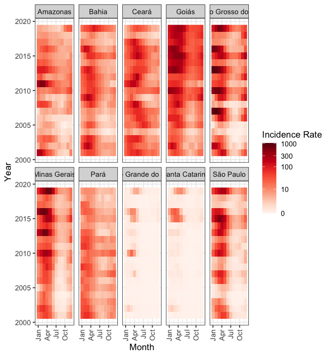
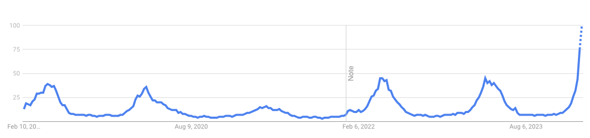
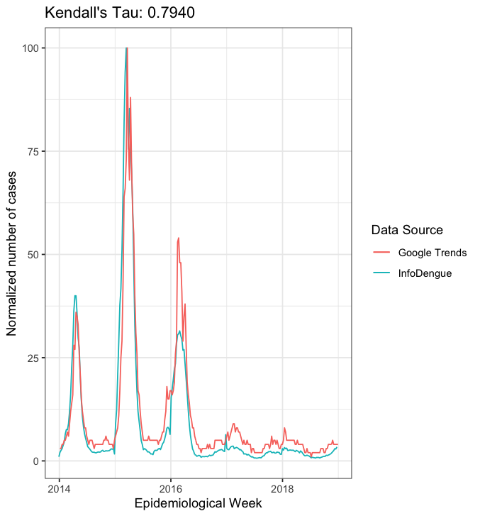

9 Data
9.1 Map of Brazilian municipalities
R package geobr
library(geobr)
library(ggplot2)
map <- read_municipality(year=2020, showProgress = FALSE)
ggplot(map) + geom_sf()
length(unique(map$code_muni)) # number of municipalities: 55709.2 Dengue data
Dengue cases, nowcasts, temperature and humidity by city level and epidemiological week
url <- "https://info.dengue.mat.br/api/alertcity?"
geocode <- 3304557
disease <- "dengue"
format <- "csv"
ew_start <- 1
ew_end <- 52
ey_start <- 2021
ey_end <- 2021
cons1 <- paste0(url,"geocode=",geocode,"&disease=",disease,"&format=",format,"&ew_start=",ew_start,"&ew_end=",ew_end,"&ey_start=",ey_start,"&ey_end=",ey_end)
library(tidyverse)
d <- read_csv(cons1, show_col_types=FALSE) %>% arrange(data_iniSE)
glimpse(d)
ggplot(d, aes(SE, casos)) + geom_line()Dengue incidence rate (cases per 100 000 residents per month) for ten Brazilian states (São Paulo and Minas Gerais from the southeast, Rio Grande do Sul and Santa Catarina from the south, Mato Grosso do Sul and Goias from the midwest, Ceará and Bahia from the northeast, Pará and Amazonas from the north). It is clear that the incidence rate is influenced by geographical and environmental factors, as described in Lowe et al. (2021)
9.3 Google trends data

Google trends dengue data. Values in a range of 0 to 100, where 100 represents the maximal value. Each data point is divided by the total searches of the geography and time range it represents to compare relative popularity. Otherwise, places with the most search volume would always be ranked highest

9.4 Population
9.5 Climate
- Temperature
- Precipitation
- Humidity
- El Niño/Southern Oscillation (ENSO) index
- Historical and future data